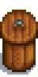
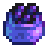
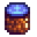

Preserves Jar
| Preserves Jar | |
 |
|
| Turns vegetables into pickles and fruit into jam. | |
| Information | |
| Source | Crafting |
| Sell Price | Cannot be sold |
| Crafting | |
| Recipe Source | |
| Ingredients | |
- For a detailed analysis of profit using the Preserves Jar, see Preserves Jar Productivity.
The Preserves Jar is a type of Artisan Equipment used to make Artisan Goods. Fruit makes Jelly; Mushrooms, Vegetables, and foraged items make Pickles; Sturgeon Roe makes Caviar; and other fish Roe make their respective Aged Roe.
A Preserves Jar is the reward for completing the  Quality Crops Bundle in the Pantry or the
Quality Crops Bundle in the Pantry or the  Rare Crops Bundle in the Pantry (Remixed).
Rare Crops Bundle in the Pantry (Remixed).
4 Preserves Jars can be obtained as the seventh prize from the Prize Machine in the Mayor's Manor (33% chance).
Products
Quality of ingredients makes no difference to the finished product. The value of the finished product is determined using the base value (i.e., with no silver or gold star) of the item. However, the preserved version is always at least as profitable as even gold star produce, although the profit margin is lower compared to normal produce.
Note that processing times are approximate, since time passes differently from 2am to 6am. One hour = 60 minutes from 6am to 2am, but 1 hour = 100 minutes from 2am to 6am. One full day is 1600 minutes, where day is 1200 minutes and night is 400 minutes.
| Image | Name | Description | Ingredients | Processing Time[1] | Sell Price | Energy / Health |
|---|---|---|---|---|---|---|
| Pickles | A jar of your home-made pickles. | One of:
|
2 × Base Ingredient Price + 50 | |||
| Jelly | Gooey. | Any fruit (1) | 2 × Base Fruit Price + 50 | |||
 |
Caviar | The cured roe of a sturgeon fish. Considered to be a luxurious delicacy! | ||||
 |
Aged Roe | Fish eggs aged in salt to bring out the flavor. | 2 × Base Roe Price |
Notes
- Items that have a 4000m processing time starting at 6:00am are done at 7:20pm two days later. Items starting between 12:40pm and 7:20pm are done at 6:00am three days later.
- If Caviar processing is started at 6am it finishes at 2am three days later, making it impossible to collect that day. It is ready four days later at the start of the day if processing begins before 12:40 pm. If it were to be started at 1:50am (the latest time it could be started), it would be finished at 7:10pm four days later.
- Truffles are not classified as Mushrooms and therefore cannot be placed into the Preserves Jar.
- Pickles made from an inedible vegetable will instead give
 0.625 × Base Vegetable Price and
0.625 × Base Vegetable Price and  0.28125 × Base Vegetable Price.[2]
0.28125 × Base Vegetable Price.[2] - Jelly made from an inedible fruit will instead give 0.5 × Base Fruit Price and 0.225 × Base Fruit Price.[3]
- The following foraged items can be pickled: Wild Horseradish, Leek, Dandelion, Cave Carrot, Morel, Chanterelle, Spring Onion, Common Mushroom, Hazelnut, Winter Root, Snow Yam, Purple Mushroom, Ginger, and Magma Cap.
Preserves Jar vs. Keg
- See also: Preserves Jar Productivity, Keg Productivity
The Preserves Jar increases the profit of a crop using the following equation: (2 × Base Crop Value + 50); while the Keg multiplies the base value of Fruits by 3, and Vegetables by 2.25. Because of this, low-value, high-yield crops like Corn or Tomatoes are more valuable in the preserves jar. The keg, on the other hand, favors crops with a much higher base value, such as Ancient Fruit or Melons. The breakpoint is  50g for fruits and
50g for fruits and  200g for vegetables.
200g for vegetables.
Below is a list of crops that are more beneficial to be put in the preserves jar, along with their raw base sell price.
| Vegetables | Fruits |
|---|---|
|
|
*Wine and jelly each sell for  150g, but jelly processes faster than wine.
150g, but jelly processes faster than wine.
It should be noted that these calculations only involve the value gained in terms of max profit; if looking at profit per day based on the time required, the preserves jar outpaces the keg regardless of the base value of the item (in every case except for Hops and Wheat) since the preserves jar has a much faster processing time.
Storage Options
While Preserves Jars can be stored anywhere on the farm, it is more space efficient to store them inside farm buildings or outside the farm altogether.
Trivia
- The description of the Preserves Jar states that it makes Jam, but it actually produces Jelly.
- The description of the Preserves Jar was not updated to include fish roe or caviar in v1.4.
References
History
- 1.4: Added ability to make Caviar and Aged Roe. Adjusted processing time so that machines process 100 minutes from 2am to 6am, not every hour the player is asleep. Preserves Jars can now be stacked in a player's inventory and in chests.
- 1.5: Pickled Ginger added.
- 1.6: Pickled Carrot, Summer Squash, Broccoli, Wild Horseradish, Leek, Dandelion, Spring Onion, Winter Root, Snow Yam, Hazelnut, Cave Carrot, Purple Mushroom, Chanterelle, Common Mushroom, Morel, and Magma Cap added. Powdermelon Jam and Aged Clam and Goby Roe added. Now obtainable from the Prize Machine.